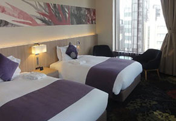
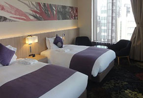

我们为您负责签证的办理，让您轻松畅行。如果是到日本体检或旅游只需要办理旅游签证即可；如果是到日本就医治病则需要办理医疗签证。
| 签证信息 | ||||
| 签证类别 | 有限期 | 停留期 | 每年最长停留期 | 往返次数 |
| 单次签证 | 3个月 | 15天/30天 | 最长可申请30天 | 1次 |
| 三年多次 | 3年 | 30天 | 180天 | 多次 |
| 五年多次 | 5年 | 90天 | 180天 | 多次 |
办理时长：从收齐材料到签证结果返回6-10个工作日
我们合作的医院拥有日本经省、外务省的双重资格认证。可办理医疗签证。我们合作的服务人员熟悉办理签证流程，目前服务过的近千名客户，达到了百分百的签证通过率
| 医疗签证 | 单次 | 最短15天，最长90天 | RMB3000 |
| 多次 | 一年或三年内无限次往返，每次可滞留90天 | RMB6000 | |
| 注：办理多次医疗签证需交担保押金RMB50，000（签证有效期结束返还） | |||
受理对象： 签证发给以在日本接受治疗等为目的而访日的外国患者等(包括短期住院接受体检检查的就诊者等)及同伴者的签证，包括短期住院接受全面检查、健康检查、诊察、牙科治疗、 疗养（包括90 天以内的温泉治疗等） 次 数： 单次和多次。多次包括1年及3年。最多停留90天。具体时间由医生决定。 受理时间： 5-10 个工作日，从材料提交使领馆后算起4个工作日在领馆内完成，须严格按领区申请。( 东北及部分地区代办处要求提前15-20 天送签)，请提前确认。
我们提供经济、舒适、高档、豪华等多种类型的酒店资源，满足客户不同的住宿需求。同时，为客户提供酒店登记服务，让您的海外医疗之旅更加高效、便捷、省心。酒店数量较多，以下仅列出部分，供您参考。
推荐一、宇都宫我的住宿酒店(HOTEL MYSTAYS UTSUNOMIYA)
价格标准：¥300-¥600

推荐二、东京日本桥微笑酒店(SIMILE HOTEL TOKYO NIHONBASHI TOKYO)
价格标准：¥300-¥600
我们提供经济、舒适、高档、豪华等多种类型的酒店资源，满足客户不同的住宿需求。同时，为客户提供酒店登记服务，让您的海外医疗之旅更加高效、便捷、省心。酒店数量较多，以下仅列出部分，供您参考。
推荐一、宇都宫大酒店(UTSUNOMIYA GRAND HOTEL)
价格标准：¥600-¥1000
推荐二、东京银座东急STAY酒店(TOKYO STAY GINZA TOKYO)
价格标准：¥600-¥1000
我们提供经济、舒适、高档、豪华等多种类型的酒店资源，满足客户不同的住宿需求。同时，为客户提供酒店登记服务，让您的海外医疗之旅更加高效、便捷、省心。酒店数量较多，以下仅列出部分，供您参考。
推荐一、东京银座千禧三井花园饭店(MILLENNIUM MITSUI GARDEN HOTEL GINZA TOKYO)
价格标准：¥1000-¥2000
 

推荐二、希尔顿东京台场酒店(HILTON TOKYO ODAIBA)
价格标准：¥1000-¥2000


我们提供专业的包车服务（司机会说中文），接机、送机、体检接送等都是需要单独付费，由于车型、距离等的不同，具体价格也不一样。详细情况参见价格清单。
| 阿尔法 7座 航空座椅 乘客4人+行李3件 |
阿尔法 8座 真皮座椅 乘客5人+行李3件 |
海狮 10座 加长加宽加高 乘客9人+行李15件 |
海狮14座 加长加宽加高 乘客13人+行李5件 |
|
| 羽田空港接送 | 单程 1588 人民币 （含高速公路费、90分钟等待费及停车费） | 单程 1388 人民币 （含高速公路费、60分钟等待费及停车费） | 单程 1988 人民币 （含高速公路费、60分钟等待费及停车费） | |
| 成田空港接送 | 单程 2188 人民币 （含高速公路费、60分钟等待费及停车费） | 单程 1988 人民币 （含高速公路费、60分钟等待费及停车费） | 单程 2588 人民币 （含高速公路费、60分钟等待费及停车费） | |
| 备注：用车时间段为8点至20点之间 （深夜及凌晨追加料金：20点至23点、5点至8点上浮20%；23点至5点上浮30%）。 | ||||
| 阿尔法 7座 航空座椅 乘客4人+行李3件 |
阿尔法 8座 真皮座椅 乘客5人+行李3件 |
海狮 10座 加长加宽加高 乘客9人+行李15件 |
海狮 14座 加长加宽加高 乘客13人+行李5件 |
|
| 东京23区内 （8小时或200公里以内） | 2788 人民币 | 2288人民币 | 3588人民币 | |
| 东京23区内 （10小时或250公里以内） | 3488 人民币 | 2888人民币 | 3588人民币 | |
| 东京23区内 （12小时或300公里以内） | 4188 人民币 | 3388人民币 | 4288人民币 | |
| 其他地区 （10小时或300公里以内） | 3888 人民币 | 3588 人民币 | 3288人民币 | 3888人民币 |
| 备注： 1、高速公路费、停车场费根据实际产生金额收取。 2、深夜及凌晨价格：20点至23点、5点至8点上浮20%；23点至5点上浮30%。 3、东京23区以外或23点以后需为司机安排就近住宿（住宿津贴淡季10000日元，旺季20000日元）。 |
||||
轻松搞定，东京市内交通
【东京地下铁介绍】
东京市内的地铁主要是这两家公司建设的—— Metro和都营 。
东京METRO（9条路线）：银座线G、丸之内线M、日比谷线H、东西线T、千代田线C、有乐町线Y、半藏门线Z、南北线N、副都心线
都营地下铁（4条线）：浅草线A、三田线I、新宿线S、大江户线E
Tips：在去不同地方时不能光看它们在地图上离得近不近，要看它们所在的车站是不是同一家公司的，这样可以更省钱。
【东京地下铁乘坐方式】
1、直接刷西瓜卡Suica
西瓜卡的使用方法很像国内用的一卡通，每张新购的卡最低要存入1000日元，其中含500日元押金，当余额低于单程票价时则不能使用，退卡时会退还500押金和车费余额，但是要收取220手续费，如果余额不足220会被扣光，所以尽量用完余额再去退款比较合算。另外，Suica也适用于很多便利店和自动贩卖机，十分方便哦。
此卡不仅通用于整个东京圈地区，在全日本多个地方，甚至在关西的大阪和北海道都能通用，简直就是一卡走天下！
2、Metro地铁一日、二日、三日通劵
这种通劵可连续1日或多日内无限制乘坐东京Metro地铁，在东京Metro各站自动售票机或销售所都可以购买。使用日期由第1次开始使用时计算，东京Metro地铁不是24小
时运行，车票名中的“一日”是指当天始发车至末班车的时间。车票名中的“两日”是指连续2日内，各日始发车至末班车的时间，不是指48小时。以此类推。
 西瓜卡
西瓜卡
以下是部分景点：
位于日本北关东的枥木县，其背面环山土地辽阔，物产富饶，保持着纯净的历史风貌及珍贵古迹，动人景致四季皆宜，是自助旅行者和深度旅游玩家的最爱，亦是喜欢远离尘嚣，充电避世，走腻大都会的旅人的最佳选择。
我们特意挑选了在日本体检业界一直处于设备和诊断领先水平的宇都宫中心医院附近的景点。
 日光国立公园的杉树林
日光国立公园的杉树林